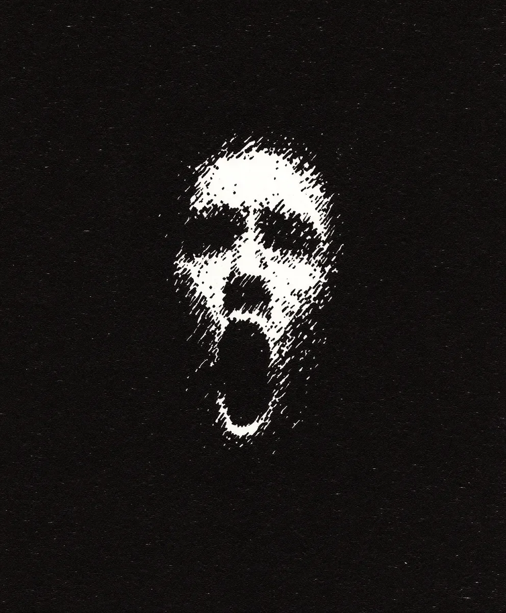

폭풍이 올 때 창문을 가리라고 했지만, 왜 그래야 하는지 아무도 설명해주지 않았어요. 그러다 어느 날 잠에서 깨어보니 제 딸이 반짝이는 바늘을 들고 제 위에 서 있었어요.
[They told me to cover my windows during storms, but no one explained why until I woke to find my daughter poised above me, a threaded needle glinting in her hand.]
검은 실이 추처럼 흔들리며 최면적이고 의도적인 리듬을 만들어냈어요. 그런 정밀함을 다루기엔 너무 작은 그녀의 손가락이 부자연스러운 안정감으로 바늘을 쥐고 있었어요. 한때는 공룡과 잠자리 이야기에 대한 질문으로 반짝이던 그녀의 눈은 이제 무감각하고 공허했어요. 마치 고대의 무언가가 그 눈 뒤에 자리 잡은 것 같았죠. 번개가 밤을 가르고, 가려지지 않은 창문을 통해 벽에 그림자가 드리워졌어요 - 인간의 해부학적 구조로는 불가능할 정도로 너무 크게 벌어진 비명을 지르는 얼굴이었어요.
[The black thread swayed like a pendulum, its rhythm hypnotic, deliberate. Her fingers, too small for such precision, gripped the needle with unnatural steadiness. Her eyes—once bright with questions about dinosaurs and bedtime stories—were dull, glassy, as if something ancient had taken residence behind them. Lightning split the night, and through the uncovered window, a shadow stretched across the wall—a face frozen in a scream too wide for human anatomy.]
“릴리,” 제가 떨리는 목소리로 속삭였어요, “그거 내려놓으렴.”
[“Lily,” I whispered, my voice trembling like a loose string, “put that down.”]
그녀의 머리가 기울어졌는데, 그 움직임이 날카롭고 새와 같았어요. 마치 목이 경첩처럼 움직이는 것 같았죠. 그녀의 입술이 벌어지고, 저는 그것을 보았어요—끔찍한 O 모양, 보이지 않는 갈고리에 의해 늘어난 것처럼 벌어진 입. 바늘이 번개의 맥동을 받아 포식자의 이빨처럼 번쩍였어요. 제 옆에서 마가렛은 자고 있었는데, 그녀의 숨결은 얕고 규칙적이었으며, 그녀의 얼굴에서 불과 몇 인치 떨어진 공포를 전혀 알아차리지 못했어요.
[Her head tilted, the motion sharp and birdlike, as though her neck were a hinge. Her lips parted, and I saw it—the terrible O-shape, her mouth stretched as if by invisible hooks. The needle caught the lightning’s pulse, gleaming like a predator’s tooth. Beside me, Margaret slept, her breath shallow and steady, oblivious to the horror inches from her face.]
저는 달려들어 릴리의 손에서 바늘을 빼앗았어요. 그녀는 일곱 살이라고는 믿기 힘든 힘으로 저항했고, 작은 손으로 제 팔을 할퀴었어요. 그녀 뒤에서 벽에 있는 그림자가 몸부림치며, 그 입이 점점 더 넓게, 더 넓게 벌어져 방 전체를 삼킬 것처럼 보였어요. 마가렛의 눈이 번쩍 떠지고, 그녀는 숨을 들이켰어요—그 소리는 비명으로 변했죠. 그녀의 입은 같은 불가능한 O 모양으로 일그러졌어요. 마치 그림자가 그녀 안으로 들어가 내부에서 그녀를 비틀어 놓은 것 같았어요.
[I lunged, wresting the needle from Lily’s grip. She fought back with a strength that defied her seven years, her small hands clawing at my arms. Behind her, the shadow on the wall writhed, its mouth stretching wider, wider, until it seemed ready to consume the room. Margaret’s eyes snapped open, and she gasped—a sound that curdled into a scream. Her mouth contorted into that same impossible O-shape, as if the shadow had reached inside her and twisted her from within.]
남은 밤 시간동안 혼돈의 연속이었어요—릴리의 비인간적인 힘, 마가렛의 갑작스러운 움직임, 그리고 해치지 않으면서 그들을 제지하려는 제 필사적인 시도. 새벽이 되자, 저는 그들의 상처를 붕대로 감쌌고, 바늘과 실은 부엌 바닥에 버려졌어요. 마가렛은 테이블에 앉아 있었는데, 그녀가 입을 꿰매려고 시도한 곳에는 수술용 테이프가 교차되어 있었어요. 위층에서는 릴리가 옷장 안에 자신을 가두고 음식을 거부했으며, 작은 손가락으로 제가 문 밖에 놓아둔 그릇을 밀어내고 있었어요.
[The rest of the night was a blur of chaos—Lily’s inhuman strength, Margaret’s sudden animation, my desperate attempts to restrain them without causing harm. By dawn, I had bandaged their wounds, the needle and thread discarded on the kitchen floor. Margaret sat at the table, her lips crisscrossed with surgical tape where she’d tried to sew them shut. Upstairs, Lily had barricaded herself in her closet, refusing food, her tiny fingers shoving away the bowl I’d left outside her door.]
이 마을에 온 지 3주. 부동산 중개인은 이곳을 “매력적인 마을"이라고 불렀어요. 역사적이고. 저렴하고. 브로셔에는 언덕 위에 있는 버려진 교회와 그 기괴한 스테인드글라스가 황달에 걸린 눈처럼 내려다보는 것에 대해서는 언급하지 않았어요. 아무도 왜 창문을 가려야 하는지 설명해주지 않았어요—그저 그렇게 해야 한다고만 했죠.
[Three weeks in this town. A "charming village,” the realtor had called it. Historic. Affordable. The brochure hadn’t mentioned the abandoned church on the hill, its grotesque stained glass glaring down like jaundiced eyes. No one explained why the windows needed covering—just that it must be done.]
그날 아침, 이웃들이 캐서롤을 들고 찾아왔어요. 그들의 얼굴은 창백하고 지쳐 보였죠. 두 집 건너에 사는 아비 부인이 참치 베이크를 가져왔는데, 그녀의 입술은 오래된 흉터로 오그라들어 있었어요. “운이 좋으셨네요,” 그녀가 피부의 팽팽함 때문에 웅얼거리는 목소리로 말했어요. “그녀가 끝내기 전에 깨어나셨으니까요.”
[Neighbors arrived that morning, casseroles in hand, their faces pale and drawn. Mrs. Abi, from two doors down, offered a tuna bake, her lips puckered with old scars. “You’re lucky,” she said, her voice muffled by the tightness of her skin. “You woke before she finished.”]
“제 아내에게 무슨 일이 일어난 거죠?” 제가 목소리가 갈라지며 따져 물었어요. “그녀는 잠들어 있었을 때—그때—”
[“What happened to my wife?” I demanded, my voice cracking. “She was asleep when—when—”]
“빛이 그녀를 건드렸어요,” 피터슨 씨가 말했어요. 그의 니코틴에 물든 손가락이 담배에 불을 붙이며 떨렸어요. “한번 닿으면, 당신은 표시가 됩니다. 침묵을 퍼뜨리도록 강요받게 되죠.”
[“The light touched her,” Mr. Peterson said. His nicotine-stained fingers trembled as he lit a cigarette. “Once touched, you’re marked. Compelled to spread the silence.”]
“침묵이라고요?” 제 말이 공허하고 터무니없게 느껴졌어요.
[“The silence?” My words felt hollow, absurd.]
“침묵의 성인들,” 아비 부인이 속삭였어요. “그들은 우리가 증인이 되길 원해요. 그들의 짐을 나누어 지기를 원하죠.”
[“The Saints of Silence,” Mrs. Abi whispered. “They want us to bear witness. To share their burden.”]
교회가 지평선에 우뚝 솟아 있었고, 그 첨탑은 하늘을 할퀴는 것 같았어요. 안에는 스테인드글라스 창문이 부자연스러운 빛으로 빛나고 있었는데, 각각 고통으로 일그러진 얼굴을 한 성인을 묘사하고 있었어요. 그들의 입은 침묵의 비명으로 벌어져 있었고, 호박색 유리로 만들어진 그들의 눈은 제가 움직일 때마다 저를 따라오는 것 같았어요. 각 창문 아래에는 명판이 있었어요: “침묵, 1879년.”
[The church loomed against the horizon, its spires clawing at the sky. Inside, the stained glass windows glowed with an unnatural light, each depicting a saint with a face twisted in agony. Their mouths gaped in silent screams, their eyes—crafted from amber glass—seemed to follow me as I moved. Beneath each window, a plaque read: “Silenced, 1879.”]
“아이들이 유린당했어요. 순수함이 도둑맞았죠,” 제 뒤에서 낮고 거친 목소리가 쉰 소리로 말했어요. 저는 숨이 목에 걸린 채 홱 돌아섰어요. 한 노인이 문간에 서 있었는데, 그의 성직자 깃은 오랜 세월로 누렇게 변해 있었고, 얼굴은 흉터 투성이였어요. 오래된 봉합 자국으로 가득한 그의 입술은 말할 때마다 움찔거렸고, 각 단어는 팽팽하고 오그라든 피부에서 스스로를 끌어내는 것 같았어요. 그의 한쪽 눈은 백내장으로 흐려져 있었고, 다른 쪽은 날카롭고 꿰뚫는 듯했어요.
[“Children violated. Innocence stolen,” rasped a voice behind me, low and gravelly. I spun around, my breath catching in my throat. An elderly man stood in the doorway, his clerical collar yellowed with age, his face a patchwork of scars. His lips, a roadmap of old sutures, twitched as he spoke, each word dragging itself free from the tight, puckered skin. One of his eyes was clouded with cataracts, the other sharp and piercing.]
“그 목사는,” 그가 계속해서 쓴맛이 가득한 목소리로 말했어요, “이름만 하나님의 사람이었죠. 그는 이 마을의 아이들을 사냥감으로 삼았어요—그의 양떼라고 불렀죠. 열두 명의 아이들, 너무 어려서 자신들에게서 무엇이 빼앗기고 있는지 이해하지 못했어요. 그들이 용기를 내어 말하고, 그를 고발했을 때, 그는 그들을 침묵시켰어요.”
[“The minister,” he continued, his voice heavy with bitterness, “was a man of God in name only. He preyed on the children of this town—his flock, he called them. Twelve of them, too young to understand what was being taken from them. When they found the courage to speak, to accuse him, he silenced them.”]
“침묵시켰다고요?” 제가 물었지만, 이미 답을 알고 있었어요. 제 목소리가 갈라지고, 말들이 메마른 목구멍을 간신히 빠져나왔어요.
[“Silenced them?” I asked, though I already knew the answer. My voice cracked, the words barely escaping my dry throat.]
그는 고개를 끄덕이며, 뒤틀린 손가락으로 입 주변의 흉터를 더듬었어요. “그는 그들을 거짓말쟁이라고 불렀어요. 죄인이라고. 그리고 마을 사람들은 그를 믿었죠. 그들은 항상 설교단 위의 사람을 믿잖아요, 그렇죠? 그는 그들의 혀를 잘라내고, 입을 꿰매서 침묵을 보장했어요. 그는 이것이 거짓 증언에 대한 신의 벌이라고 주장했죠. 그리고 마을은—하나님께서 도우시길—그것이 일어나도록 내버려 두었어요.”
[He nodded, his gnarled fingers tracing the scars around his mouth. “He called them liars. Sinners. And the town believed him. They always believe the man in the pulpit, don’t they? He had their tongues cut out, their mouths sewn shut, to ensure their silence. He claimed it was divine punishment for bearing false witness. And the town—God help them—they let it happen.”]
제 위장이 뒤틀리고, 쓸개즙이 목구멍으로 올라왔어요. “그럼 성인들은요?” 제가 물었지만, 정말 알고 싶은지는 확신할 수 없었어요.
[My stomach churned, bile rising in my throat. “And the saints?” I asked, though I wasn’t sure I wanted to know.]
그 남자의 시선이 성당의 중앙 통로를 따라 늘어선 스테인드글라스 창문으로 향했어요. 그 선명한 색상들은 밖에서 모여드는 폭풍 구름으로 인해 흐려져 있었어요. “그 아이들은,” 그가 속삭이는 목소리로 말했어요, “그날 밤 죽었어요. 번개가 교회를 쳐서 불이 났죠. 목사는 설교단에서 타버린 채로 발견되었는데, 그의 입은 비명을 지르다 굳어 있었어요. 하지만 아이들은—그들은 사라지지 않았어요. 그들의 고통, 분노, 고발—그것들이 유리의 일부가 되었죠. 그들의 얼굴, 그들의 비명은 창문에 새겨져, 영원히 침묵 속에 갇혔어요.”
[The man’s gaze shifted to the stained glass windows lining the nave, their vibrant colors dimmed by the storm clouds gathering outside. “The children,” he said, his voice dropping to a whisper, “died that night. Lightning struck the church, setting it ablaze. The minister was found charred in the pulpit, his mouth frozen in a scream. But the children—they weren’t gone. Their pain, their anger, their accusations—they became part of the glass. Their faces, their screams, were etched into the windows, forever trapped in silence.”]
저는 창문을 응시했어요. 성인들의 얼굴은 고통으로 일그러져 있었고, 그들의 입은 영원한, 소리 없는 외침으로 벌어져 있었어요. 그들 눈의 호박색 유리는 마치 살아있는 것처럼 반짝이는 것 같았어요. “복수라고요?” 제가 되풀이했어요.
[I stared at the windows, the saints’ faces twisted in agony, their mouths gaping in eternal, soundless cries. The amber glass of their eyes seemed to shimmer, alive. “Revenge?” I echoed.]
그 남자는 고개를 끄덕였고, 그의 표정은 엄숙했어요. “그들은 아무도 자신들의 목소리를 듣지 않았기 때문에 우리의 목소리를 빼앗아요. 폭풍이 치고 번개가 번쩍일 때, 그들의 모습이 근처 집들에 투영돼요. 그 빛에 노출된 사람—그들을 본 사람은 누구든—그들의 그릇이 됩니다. 그들의 일을 계속하도록 강요받죠. 다른 사람들이 그들에게 행해진 일을 목격하게 만들어요.”
[The man nodded, his expression grim. “They take our voices because no one heard theirs. During storms, when the lightning flashes, their images project onto nearby homes. Anyone caught in that light—anyone who sees them—becomes a vessel. Compelled to continue their work. To make others bear witness to what was done.”]
저는 비틀거리며 뒤로 물러섰어요. 그의 말의 무게가 물리적인 힘처럼 저를 짓눌렀어요. “왜 아무도 이걸 멈추지 않았나요? 왜 누군가 창문을 파괴하지 않았나요?”
[I staggered back, the weight of his words pressing down on me like a physical force. “Why hasn’t anyone stopped this? Why hasn’t someone destroyed the windows?”]
그의 얼굴이 공포로 일그러졌고, 입 주변의 흉터가 팽팽하게 당겨졌어요. “많은 사람들이 시도했어요,” 그가 거의 들리지 않는 목소리로 말했어요. “몇몇은 작은 창문들을 깨뜨렸죠, 저주가 끝날 거라고 생각하면서. 하지만 성인들은—그들은 쉽게 용서하지 않아요. 유리를 깬 사람들은 단순한 바느질보다 더 끔찍한 운명을 겪었어요. 그들의 비명은—” 그는 몸을 떨었고, 그의 멀쩡한 눈이 성가대석 쪽의 가장 큰 창문으로 향했어요. “그들의 비명은 여전히 이 교회에 울려 퍼져요.”
[His face twisted with fear, the scars around his mouth pulling taut. “Many have tried,” he said, his voice barely audible. “Some shattered the smaller windows, thinking it would end the curse. But the saints—they don’t forgive easily. Those who broke the glass suffered worse fates than stitches. Their screams—” He shuddered, his good eye darting to the largest window at the chancel. “Their screams still echo in this church.”]
저는 중앙 창문으로 시선을 돌렸어요. 제단 위로 그리스도의 형상이 우뚝 솟아 있었어요. 그의 얼굴도 다른 얼굴들처럼 비명으로 일그러져 있었고, 그의 입은 불가능할 정도로 크게 벌어져 있었어요. 그 장인정신은 정교했고, 거의 너무 생생했어요.
[I turned to the central window, the figure of Christ looming above the altar. His face, like the others, was contorted in a scream, his mouth stretched impossibly wide. The craftsmanship was exquisite, almost too lifelike.]
저는 교회에서 비틀거리며 나왔어요. 그의 말이 장송곡처럼 제 마음속에 남았어요. 폭풍은 이미 몰려오고 있었고, 천둥이 멀리서 낮고 불길하게 울려 퍼졌어요. 저는 멍한 상태로 집으로 운전했고, 제 생각은 공포와 불신이 뒤섞인 혼란스러운 상태였어요. 그것이 사실일 수 있을까요? 유리 속의 얼굴들이 정말로 갇히고 복수심에 불타는 아이들의 영혼일 수 있을까요? 아니면 이것은 일종의 집단 광기, 죄책감과 미신에서 비롯된 저주일까요?
[I stumbled out of the church, his words in my mind like a dirge. The storm was already building, thunder rumbling low and ominous in the distance. I drove home in a daze, my thoughts a chaotic tangle of fear and disbelief. Could it be true? Could the faces in the glass really be the souls of children, trapped and vengeful? Or was this some shared madness, a curse born of guilt and superstition?]
그날 밤, 폭풍이 몰아치는 동안, 저는 가족을 보호하기 위해 할 수 있는 모든 것을 했어요. 창문을 호일로 덮고, 문 아래에 수건을 채우고, 기도했어요—비록 누구에게 기도하는지는 확실하지 않았지만요. 하지만 그것으로는 충분하지 않았어요.
[That night, as the storm raged, I did everything I could to protect my family. I covered the windows with foil, stuffed towels beneath the doors, and prayed—though I wasn’t sure to whom. But it wasn’t enough.]
릴리는 호일을 끌어내렸어요. 그녀의 움직임은 느리고 의도적이었어요. 마치 보이지 않는 손에 이끌리는 것 같았죠. 그림자가 그녀의 벽을 가로질러 뻗어나갔고, 비명 지르는 얼굴이 그녀의 나비 무늬 벽지를 기괴한 무언가로 왜곡시켰어요. 마가렛이 문간에 나타났는데, 붕대는 버려지고, 떨리는 손에는 바늘과 실을 꽉 쥐고 있었어요. 그녀의 입술은 이미 생생하고 피투성이였으며, 그 끔찍한 O 모양으로 반쯤 꿰매져 있었어요. 그들의 눈이 방 건너편에서 마주쳤지만, 소통하는 것이 아니라 동기화되어 있었어요—같고 보이지 않는 줄에 맞춰 춤추는 인형들처럼요.
[Lily pulled down the foil, her movements slow and deliberate, as if guided by unseen hands. The shadow stretched across her walls, the screaming face distorting her butterfly wallpaper into something grotesque. Margaret appeared in the doorway, her bandages discarded, a needle and thread clutched in her trembling hands. Her lips, raw and bloodied, were already half-stitched into that terrible O-shape. Their eyes met across the room, not communicating, but synchronized—puppets dancing to the same invisible strings.]
저는 릴리에게 달려들었지만, 빛이 먼저 저를 건드렸어요. 그것은 차갑게 타올랐고, 마비되는 감각이 제 팔을 타고 퍼져나갔어요. 제 입술이 따끔거리고, 근육이 그 끔찍한 모양을 향해 당겨졌어요. 마치 보이지 않는 갈고리가 그것들을 벌리는 것 같았어요. 절박함이 저를 다시 교회로 이끌었고, 폭풍이 비와 바람으로 저를 때리는 가운데 저는 성당의 중앙 통로를 비틀거리며 지나갔어요.
[I lunged for Lily, but the light touched me first. It burned cold, a searing numbness spreading up my arm. My lips tingled, muscles pulling toward that awful shape, as though invisible hooks were dragging them apart. Desperation drove me back to the church, the storm battering me with rain and wind as I stumbled through the nave.]
“그만!” 제가 소리쳤고, 제 목소리가 텅 빈 공간에 울려 퍼졌어요. “내 가족을 내버려 둬!”
[“ENOUGH!” I screamed, my voice echoing through the hollow space. “Leave my family alone!”]
번개가 바로 머리 위를 쳤고, 창문들이 신성하지 않은 빛으로 타올랐어요. 성인들의 얼굴이 뒤틀리는 것 같았고, 그들의 호박색 눈이 탐욕스러운 강렬함으로 저를 응시했어요. 저는 무너져가는 제단에서 느슨한 돌을 집어 중앙 창문을 향해 던졌어요. 유리가 금이 가고, 거미줄 같은 균열이 비명을 지르는 그리스도 모습을 가로질러 퍼져나갔어요.
[Lightning struck directly overhead, the windows blazing with an unholy light. The saints’ faces seemed to twist, their amber eyes locking onto me with ravenous intensity. I grabbed a loose stone from the crumbling altar and hurled it at the central window. The glass cracked, a spiderweb fracture spreading across the screaming Christ.]
보이지 않는 바늘이 제 입술을 찌르자 입에서 고통이 폭발했지만, 저는 멈추지 않았어요. 저는 고통을 통해 비명을 질렀고, 제 목소리는 거칠고 부서졌어요. “내가 너희 말을 들어!” 저는 숨이 막히며 말했어요. “내가 무슨 일이 있었는지 증언할게! 너희를 믿어!”
[Pain exploded in my mouth as invisible needles pierced my lips, but I refused to stop. I screamed through the agony, my voice raw and broken. “I hear you!” I choked out. “I bear witness to what was done! I believe you!”]
또 다른 돌. 또 다른 균열. 고통이 심해졌고, 제 입술이 찢어지며 피가 턱을 타고 흘러내렸어요. 하지만 저는 멈추지 않았어요. 세 번째 돌이 창문을 완전히 산산조각 냈고, 유리가 색과 빛의 소나기처럼 밖으로 폭발했어요. 천 개의 비명 같은 소리가 공기를 가득 채웠어요—부드럽고, 절박하고, 마침내 자유로워진.
[Another stone. Another crack. The pain intensified, my lips tearing, blood streaming down my chin. But I didn’t stop. The third stone shattered the window entirely, the glass exploding outward in a shower of color and light. A sound like a thousand screams filled the air—soft, desperate, and finally free.]
강제성이 사라지고, 보이지 않는 바늘들이 제 살에서 빠져나갔어요. 성인들의 목소리가 사라지고, 그들의 고발도 사라졌어요. 저는 무릎을 꿇고 쓰러졌고, 피와 소금의 맛이 제 혀에 무겁게 남았어요.
[The compulsion lifted, the invisible needles withdrawing from my flesh. The saints’ voices faded, their accusations gone. I collapsed to my knees, the taste of blood and salt heavy on my tongue.]
이제, 우리의 도시 아파트에서, 우리는 그 여파와 함께 살아가고 있어요. 마가렛은 재건된 입술을 통해 속삭이고, 릴리는 비명 지르는 얼굴들의 그림을 그려요. 그리고 폭풍이 다가올 때, 저는 창문을 가리고 속삭임에 귀를 기울이며, 침묵이 잘못된 사람들을 보호한다는 것을 상기해요.
[Now, in our city apartment, we live with the aftermath. Margaret whispers through reconstructed lips. Lily draws pictures of screaming faces. And when storms approach, I cover the windows and listen for the whispers, a reminder that silence protects the wrong people.]